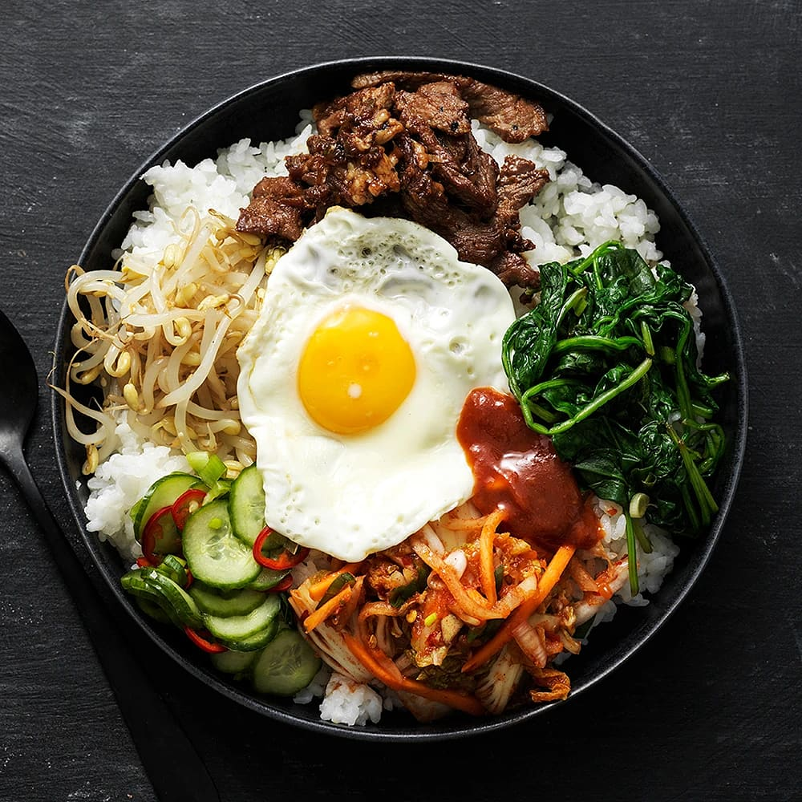
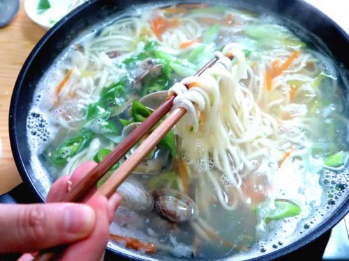
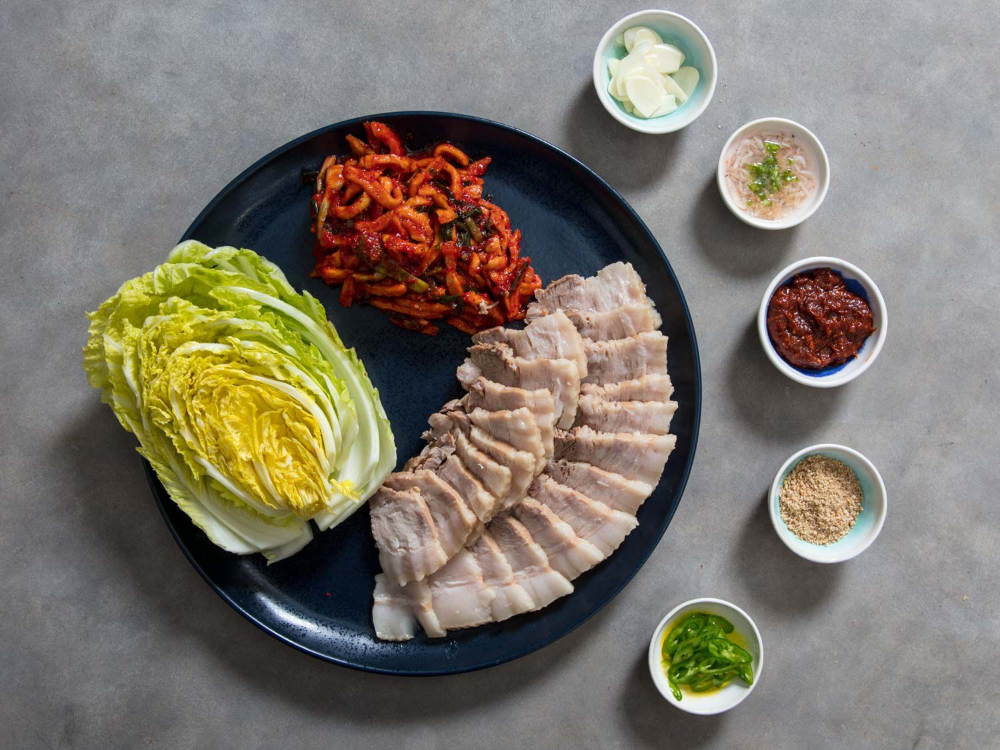
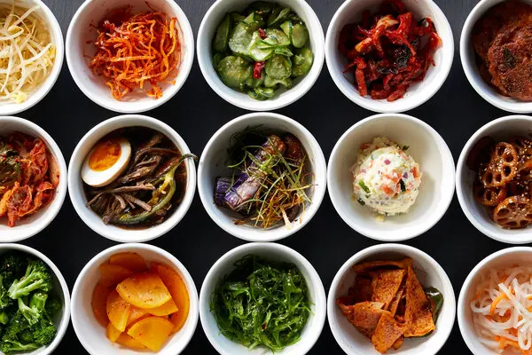
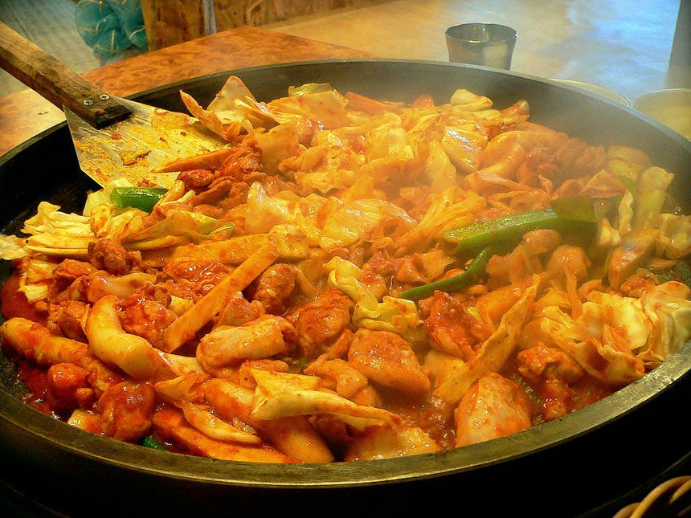
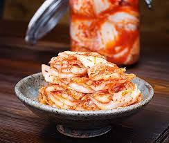

Det koreanska köket har mycket att erbjuda. Det består oftast av ris, nudlar, tofu, grönsaker och
kött.
Traditionella koreanska måltider innehar oftast många sidorätter, så kallade banchan, och ångkokt
ris.
Kimchi, en kryddstark grönsaksrätt som är Koreas nationalrätt och serveras vanligtvis till varje
måltid.
Koreansk mat innehåller oftast ris, buljongsoppa, doenjang (en jäst sojabönspasta), sojasås, salt,
vitlök, ingefära och gochujang (chilipasta).
För att läsa mer om Sydkorensk mat kan du klicka här
Bilder på koreansk mat
Intressant att veta är att det nästan är billigare att äta ute på restaurang i Sydkorea än att
handla
mat i affären och tillaga hemma.
Nedan kommer bilder på några populära koreanska rätter.

Bibimbap är en koreansk maträtt där mängder av goda tillbehör serveras
tillsammans
med ris. Marinerad entrecôte och grönsaker som spenat, böngroddar eller gurka är exempel
på
toppings som är vanliga. Och självklart – ett stekt ägg på toppen!Tteokbokki är en koreansk rätt gjord med tteok-myeon (tunn riskaka) som
huvudingrediens. Tteokbokki är en typisk koreansk gatuköksrätt som är wokad med kryddor
som
veteriskaka, riskaka, fiskkaka, grönsaker och röd paprikapasta. Den smaksätts vanligtvis
med
röd paprikapasta men finns även smaksatt med sojasås.

Kal-guksu är en koreansk nudelrätt som består av handgjorda, knivskurna
vetemjölsnudlar serverade i en stor skål med buljong och andra ingredienser. Det anses
traditionellt vara en säsongsbetonad mat som oftast konsumeras på sommaren. Dess namn
kommer
från det faktum att nudlarna inte kavlas ut eller snurras, utan skärs ut.

Bossam är en fläskrätt i det koreanska köket. Den består vanligtvis av
fläsk som
kokas i kryddor och skivas tunt. Köttet serveras med tillbehör som kryddig rädissallad,
skivad rå vitlök,
ssamjang (fermenterad sojasås), saeu-jeot (saltade räkor), kimchi och grönsaker som
sallad,
perillablad och inre blad av kinakål.Maträtten Kimbap betyder sjögräsris på koreanska. Det
är en maträtt som görs genom att tillsätta olika ingredienser som spenat, inlagd rädisa,
morötter, ägg och kardborrerot till ris kryddat med salt och sesamolja. Den rullas in i
torkat sjögräs och skivas i lagom stora bitar.

Banchan är sidorätter man får till maten. Ibland kan man få över 20
rätter. Det är
oftast gratis påfyllning av dessa.

Dak-galbi görs genom att steka marinerad tärnad kyckling i en
gochujang-baserad sås
med sötpotatis, kål, perillablad, salladslök, tteok (riskaka) och andra ingredienser.

Kimchi, en kryddstark grönsaksrätt som är Koreas nationalrätt
Bingsu är en koreansk dessert av hyvlad is med söta pålägg som exempelvis
hackad
frukt, kondenserad mjölk, fruktsirap och röda bönor. Den vanligaste varianten är
”pat-bingsu", med röda bönor på toppen.
Tips på maträtter efter region
Här nedan kommer tips på rätter att beställa beroende på var du befinner dig i Sydkorea.
Plats
Maträtt
Jeonju
Bibimbapens hemstad. Gå till en gammal traditionell restaurang som serverar
Bibimbap
i lerkärl.
Busan
Fiskrätter, t.ex. levande bläckfisk. Som hamnstad bjuder den på många bra
fiskrätter.
Jeju Island
Mandariner från denna ö har tunnt skal och en speciell söt smak som beror på den
höga sockerhalten.